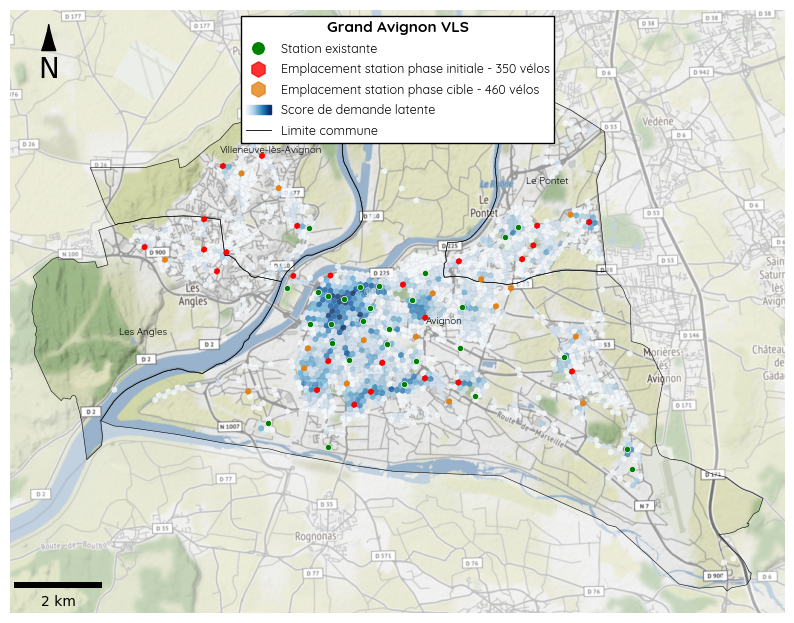
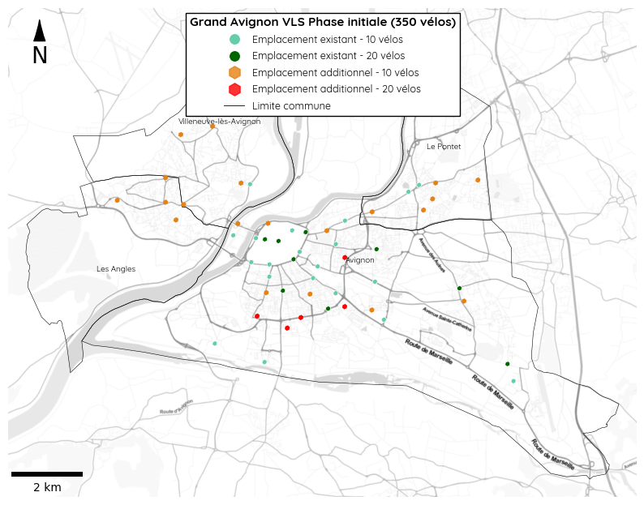
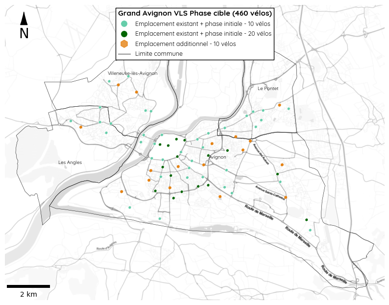
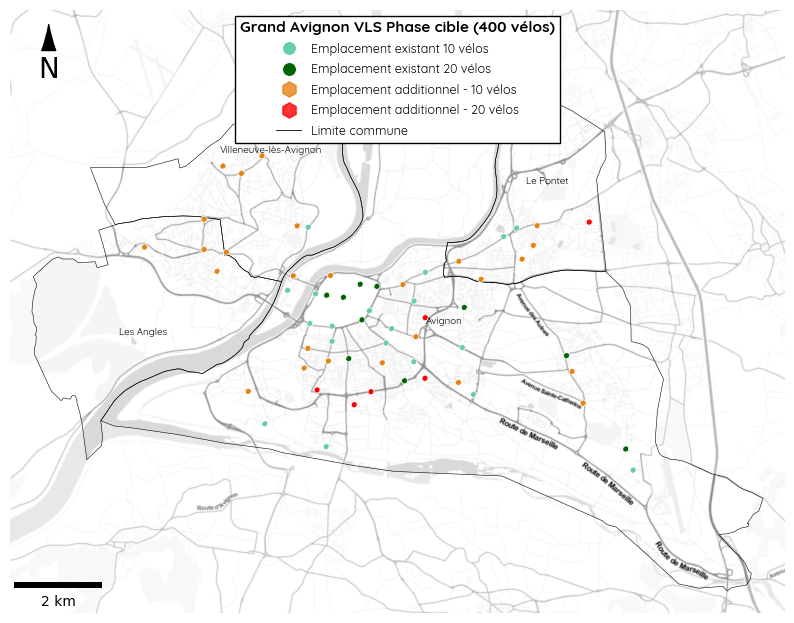

Avignon
France
Dimensionnement de la flotte
| Population | Vélos | Stations | |
|---|---|---|---|
| Communes | |||
| Avignon | 91143 | 260 | 38 |
| Le Pontet | 17041 | 40 | 7 |
| Villeneuve-lès-Avignon | 12216 | 30 | 5 |
| Les Angles | 8476 | 20 | 4 |
| Total | 128876 | 350 | 54 |
Taille de la flotte de vélos:
390 vélos totaux en libre service (350 vélos + 40 dédiés à la maintenance)
54 stations
- 15 stations à 20 emplacements
- 41 stations à 10 emplacements
| Population | Vélos | Stations | |
|---|---|---|---|
| Communes | |||
| Avignon | 91143 | 296 | 43 |
| Le Pontet | 17041 | 43 | 8 |
| Villeneuve-lès-Avignon | 12216 | 35 | 6 |
| Les Angles | 8476 | 26 | 4 |
| Total | 128876 | 400 | 61 |
Taille de la flotte de vélos:
440 vélos totaux en libre service (400 vélos + 40 dédiés à la maintenance)
61 stations
- 16 stations à 20 emplacements
- 45 stations à 10 emplacements
| Population | Vélos | Stations | |
|---|---|---|---|
| Communes | |||
| Avignon | 91143 | 340 | 50 |
| Le Pontet | 17041 | 50 | 9 |
| Villeneuve-lès-Avignon | 12216 | 40 | 7 |
| Les Angles | 8476 | 30 | 5 |
| Total | 128876 | 460 | 71 |
Taille de la flotte de vélos:
510 vélos totaux en libre service (460 vélos + 50 dédiés à la maintenance)
71 stations
- 16 stations à 20 emplacements
- 55 stations à 10 emplacements
Réseau de stations




Distance entre les stations
Interdistance moyenne : 456 mètres
Distance minimale : 191 mètres
Distance maximale : 1343 mètres
Approximation de la couverture de population
Population à moins de 400m d’une station : 103213 soit environ 81% de la population
Population à moins de 1000m d’une station : 126193 soit environ 99% de la population
Distance entre les stations
Interdistance moyenne : 433 mètres
Distance minimale : 191 mètres
Distance maximale : 1289 mètres
Approximation de la couverture de population
Population à moins de 400m d’une station : 107464 soit environ 84% de la population
Population à moins de 1000m d’une station : 126535 soit environ 99% de la population
Distance entre les stations
Interdistance moyenne : 414 mètres
Distance minimale : 191 mètres
Distance maximale : 1080 mètres
Approximation de la couverture de population
Population à moins de 400m d’une station : 112268 soit environ 88% de la population
Population à moins de 1000m d’une station : 126869 soit environ 99% de la population
Prédictions d’indicateurs de performance
Scénarios pessimistes et optimistes pour Avignon avec une proposition de 348 vélos
Utilisateurs attendus par an: 7,986 à 14,129
Estimation de politique de prix bas
- Trajets attendus par an: 364,477 (64,814 liés au tourisme) à 625,486 (95,314 liés au tourisme)
- Rotation journalière par vélo attendue: 2.87 à 4.92
- Kilomètres attendus par an: 1,275,670 à 2,189,202
- Couts de maintenance attendus par an: 96,183€ à 149,078€
- Kilos de CO2 évités attendus par an: 77,816 à 133,542
Estimation de politique de prix moyen
- Trajets attendus par an: 196,126 (46,296 liés au tourisme) à 333,167 (68,082 liés au tourisme)
- Rotation journalière par vélo attendue: 1.54 à 2.62
- Kilomètres attendus par an: 686,446 à 1,166,087
- Couts de maintenance attendus par an: 62,067€ à 89,837€
- Kilos de CO2 évités attendus par an: 41,873 à 71,132
Estimation de politique de prix élevé
- Trajets attendus par an: 147,095 (34,722 liés au tourisme) à 249,875 (51,061 liés au tourisme)
- Rotation journalière par vélo attendue: 1.16 à 1.97
- Kilomètres attendus par an: 514,834 à 874,560
- Couts de maintenance attendus par an: 52,129€ à 72,958€
- Kilos de CO2 évités attendus par an: 31,405 à 53,349
Scénarios pessimistes et optimistes pour Avignon avec une proposition de 398 vélos
Utilisateurs attendus par an: 8,795 à 15,562
Estimation de politique de prix bas
- Trajets attendus par an: 401,422 (71,386 liés au tourisme) à 688,889 (104,977 liés au tourisme)
- Rotation journalière par vélo attendue: 2.76 à 4.74
- Kilomètres attendus par an: 1,404,979 à 2,411,111
- Couts de maintenance attendus par an: 106,877€ à 165,133€
- Kilos de CO2 évités attendus par an: 85,704 à 147,078
Estimation de politique de prix moyen
- Trajets attendus par an: 216,007 (50,990 liés au tourisme) à 366,939 (74,984 liés au tourisme)
- Rotation journalière par vélo attendue: 1.49 à 2.53
- Kilomètres attendus par an: 756,027 à 1,284,287
- Couts de maintenance attendus par an: 69,300€ à 99,887€
- Kilos de CO2 évités attendus par an: 46,118 à 78,342
Estimation de politique de prix élevé
- Trajets attendus par an: 162,005 (38,242 liés au tourisme) à 275,202 (56,238 liés au tourisme)
- Rotation journalière par vélo attendue: 1.12 à 1.89
- Kilomètres attendus par an: 567,019 à 963,210
- Couts de maintenance attendus par an: 58,357€ à 81,297€
- Kilos de CO2 évités attendus par an: 34,589 à 58,755
Scénarios pessimistes et optimistes pour Avignon avec une proposition de 469 vélos
Utilisateurs attendus par an: 9,850 à 17,425
Estimation de politique de prix bas
- Trajets attendus par an: 449,478 (79,930 liés au tourisme) à 771,355 (117,543 liés au tourisme)
- Rotation journalière par vélo attendue: 2.63 à 4.51
- Kilomètres attendus par an: 1,573,171 à 2,699,748
- Couts de maintenance attendus par an: 121,169€ à 186,398€
- Kilos de CO2 évités attendus par an: 95,963 à 164,685
Estimation de politique de prix moyen
- Trajets attendus par an: 241,867 (57,093 liés au tourisme) à 410,866 (83,960 liés au tourisme)
- Rotation journalière par vélo attendue: 1.41 à 2.4
- Kilomètres attendus par an: 846,532 à 1,438,030
- Couts de maintenance attendus par an: 79,095€ à 113,344€
- Kilos de CO2 évités attendus par an: 51,637 à 87,719
Estimation de politique de prix élevé
- Trajets attendus par an: 181,400 (42,819 liés au tourisme) à 308,148 (62,970 liés au tourisme)
- Rotation journalière par vélo attendue: 1.06 à 1.8
- Kilomètres attendus par an: 634,899 à 1,078,517
- Couts de maintenance attendus par an: 66,841€ à 92,528€
- Kilos de CO2 évités attendus par an: 38,729 à 65,790